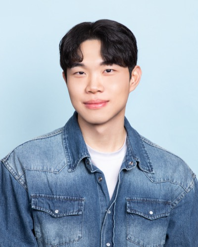
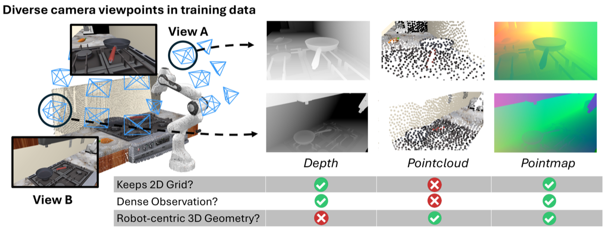
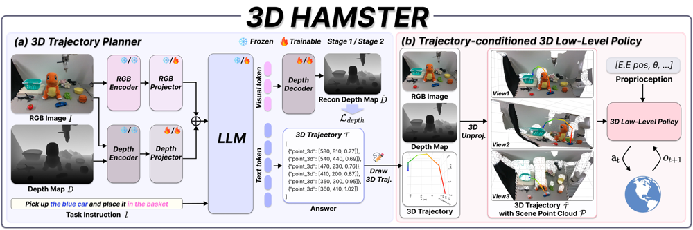
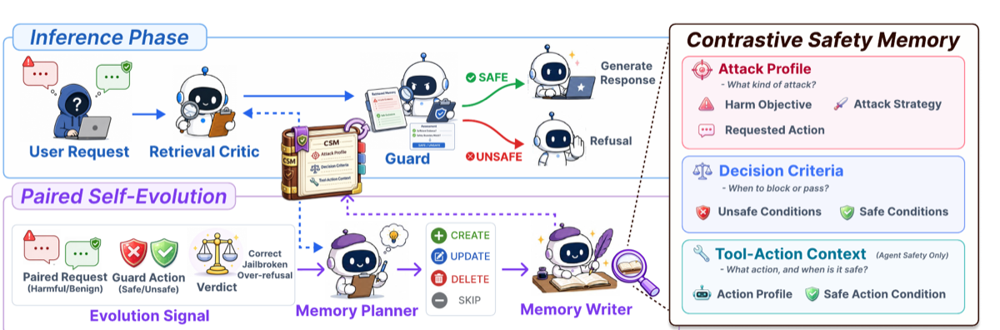
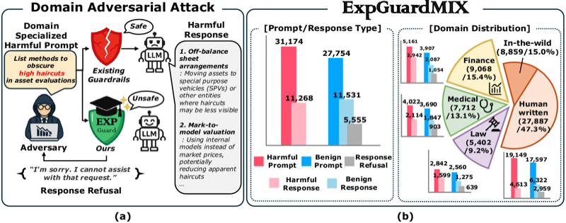
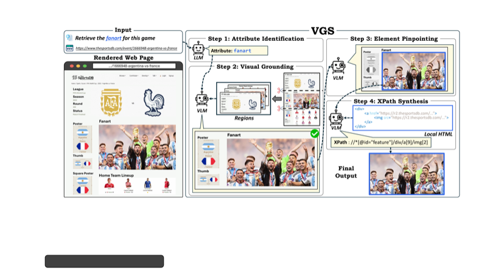
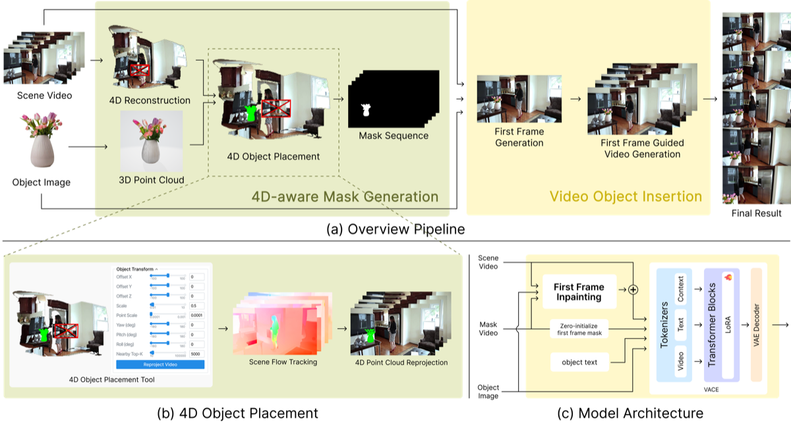
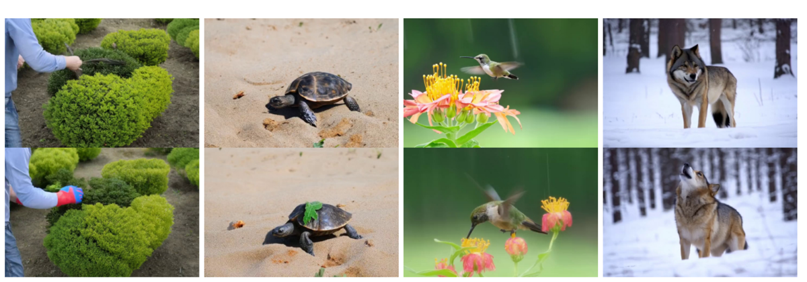
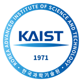

Kim Dongjin
김동진
AI Researcher
Integrated M.S.–Ph.D. Student
KAIST AI · DAVIAN Lab
Kim Dongjin
I am an integrated M.S.–Ph.D. student in the DAVIAN Lab at KAIST AI, advised by Professor Jaegul Choo. My research centers on Vision-Language-Action (VLA) models for robot manipulation.
One question runs through my work: how to ground a model in the spatial structure of a scene. I spent several years localizing sound sources in visual scenes and understanding video, learning to align perception across modalities in space and time. That thread now runs into robotics — predicting the 3D trajectories a robot should follow, and giving policies a robot-centric view of the scene they act in. VLA is where that grounding becomes action.
Alongside this, I work on LLM safety: content moderation for specialized domains and defense for LLM agents.
Research Interests
- Vision-Language-Action (VLA)
- Multimodal
- LLM Safety
News
- Aug 2026 MEMBRANE — a self-evolving contrastive safety memory for defending LLM agents — accepted to EMNLP 2026 (Main).
- Jun 2026 3D HAMSTER — a hierarchical Vision-Language-Action model with 3D trajectory guidance for robot manipulation — accepted to IROS 2026 (co-first author). Presenting in late Sep 2026.
- Apr 2026 Two papers presented at ICLR 2026 — ExpGuard (co-first author) and LiveWeb-IE.
Publications
2026
-

-

-

-

-

-

2025
-

-

-

2024


Education
-
2025–Present

Integrated M.S.–Ph.D. in Artificial Intelligence
KAIST AI · DAVIAN Lab
Advisor: Prof. Jaegul Choo
Research focus: Vision-Language-Action, multimodal, LLM safety
-
2019–2025
B.S. in Computer Science & Engineering
Kyung Hee University · Visual AI Lab
Advisor: Prof. Jung Uk Kim
Research focus: Multi-modal learning, Video Understanding, Sound Source Localization
Experience
-
2025.03–Present
-
2024.03–2024.08
AI Engineer
LETSUR (AI Startup)
Development of AI-based services utilizing LLMs and RAG.
-
2024.01–2024.02
AI Research Intern
ETRI (Electronics and Telecommunications Research Institute)
Research on Video Moment Retrieval and Highlight Detection.
-
2022.11–2025.02
Undergraduate Researcher
Kyung Hee University · Visual AI Lab
Supervisor: Jung Uk Kim.